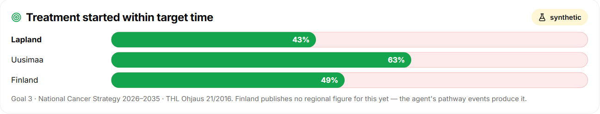

“Hei Matti, your CT and biopsy are in five days. Is everything okay for getting there?”
“I'll cancel. There's no bus that morning.”
This call doesn't exist today.
Matti just won't show up. Nobody will know why.
Why
How many
Who
38 853 new cancers per year in Finland · Finnish Cancer Registry, Syöpä 2024
It breaks between the steps.
Detection
Referral
Diagnosis
Treatment
≈1 in 3feel their diagnosis came too late
68%screening in Helsinki area, at most · goal 80%
31%believe care is equal across Finland (2017)
Goal 3 · Treatment starts within target time · no public number yet
Cancer organisations' survey (STT) · Cancer Registry screening 2024 · Syöpäpotilaat ry & Roche survey (Kantar 2017) · National Cancer Strategy 2026–2035, THL Ohjaus 21/2016
For counties · Today
Today, care orbits the institution.
So we build there first.
Institution
Person
For counties · Today
CareCatalyst for counties
No new app. Docks onto Apotti and Maisa.
SignalCancelled, no-show, not booked
Ask whyThe agent calls
HelpKela taxi, new slot, care at home
LearnWhy × step × region, anonymised
For counties · Today
For the first time: the why, per region.
Live demo

Goal 3 indicator · synthetic patients and demo values · region boundaries: Statistics Finland (CC BY 4.0)
For counties · Today
Start on Monday.
Pilot at HUSLung cancer · 90 days · FHIR sandbox
Transport by defaultDistance → Kela taxi, booked
Care comes homeVideo visit · home hospital
Report the whyNext to the Goal 3 indicator
For counties · Today
The money is there. The moment is missing.
4%appointments lost to no-shows (Pirkanmaa 2025)
−42%no-shows with navigator calls (US RCT)
€364MKela travel costs (2025)
2.6×monthly cost, stage IV vs IA, lung (NL)
Pirha 2025 (35 255 of 875 837 bookings) · Percac-Lima et al. 2015, RCT · Kela 2025 · Lung cancer cost study NL 2012–2021
For counties · Today
Open source. Counties pay once.
€200konce · HUS implementation
€315kvalue per year · mostly assumption
≈8 mopayback (estimate)
30%of insight revenue back to counties
Optional later: anonymised aggregates only · county stays controller · free for public bodies
Estimates, HUS all cancer types: 11 500 new cases/year · 15% stalled · 30% opt-in · −42% no-shows (US RCT, Percac-Lima 2015) · value = 210 × €300 no-shows (€63k) + 21 × €12k earlier stage (€252k, assumption from NL/ES cost studies) · pricing: team proposal
Tomorrow, the centre of gravity moves.
From the institution to the person.
Institution
Person
For you · Tomorrow
Eero, 78, Espoo. And Jenny.
His back hurts. Again.
His agent“Shall I book tomorrow at 8, before bingo? Kela may cover the taxi.”
For you · Tomorrow
CarePulse
One plan for Eero's day.
Agent to agent.
He never has to explain his life again.
Eero's agentCarePulse
County agentBuilt today
KelaTaxi booked
CareCatalyst
Closing gaps. Connecting care.
Today we close the gaps the system can see. Tomorrow, the ones only you can see.
Live demo
Vision
Data & limits
Demo data
Patients and region values in the demo are synthetic. Region boundaries are public (Statistics Finland). Every pitch number has a source.
Privacy
Runs inside the county's care relationship. Only anonymous aggregates leave (GDPR Art. 9). No automated decisions (Art. 22).
Medical
The agent never diagnoses. It asks why and books help.
Evidence
Call effect from US navigator RCTs. No Finnish AI trial yet: that's the pilot.
Goal 3 data
THL: waiting-time data still needs reliability checks. Pathway events fill that gap.